Schach
Zum Verständnis dieses Artikels sind folgende Seiten hilfreich:
Ein Terminal öffnen, optional
Ein Programm starten, optional
Programme zum Menü hinzufügen, optional
Schach ist eines der ältesten Spiele der Menschheit. Das heißt aber nicht, dass es veraltet ist – ganz im Gegenteil. Unzählige Schachprogramme tummeln sich auf dem Markt. Sie werden ständig weiterentwickelt, und gegen die besten Computer ist mittlerweile jeder menschliche Gegner chancenlos  . Wer seinen Ubuntu-PC zur Schachmaschine machen will, findet hier die Möglichkeiten: ob gegen den Computer oder via Internet gegen menschliche Gegner, ob Anfänger oder "Profi" – bei Ubuntu ist für jeden was dabei.
. Wer seinen Ubuntu-PC zur Schachmaschine machen will, findet hier die Möglichkeiten: ob gegen den Computer oder via Internet gegen menschliche Gegner, ob Anfänger oder "Profi" – bei Ubuntu ist für jeden was dabei.
Einleitung¶
Man unterscheidet zwei Bestandteile von Schachsoftware: Schach-Engines und grafische Oberflächen ("Schachbrett-Programme"). Die Engines sind sozusagen die "Gehirne", sie sind also primär für das Berechnen der Züge und damit für das eigentliche Schachspielen zuständig. Viele heutige Engines können aber durchaus noch mehr, etwa Stellungsbewertung und Abfragen aus Datenbanken (z. B. Eröffnungsbibliotheken). Eine grafische Benutzeroberfläche besitzt eine Engine nativ jedoch nicht. Heute spielt man Schach am Computer natürlich nahezu immer mit bzw. unter einer grafischen Benutzeroberfläche. Es ist aber auch unter Ubuntu möglich gegen gewisse Engines (es funktioniert nicht bei allen) im Terminal zu spielen. Manche bieten dafür Sondereffekte, etwa stilisierte Darstellungen der Stellung.
Da diese Methode höchst unkomfortabel und heute im Grunde nur noch von nostalgischem Interesse ist, gibt es eine Vielzahl an grafischen Oberflächen, die die Kommunikation zwischen Engine und Benutzer mittels auf dem Bildschirm dargestellter Schachbretter ermöglichen. Dabei bieten manche Oberflächen z. T. äusserst umfassende Zusatzfunktionen, die unter Umständen sogar im Vordergrund stehen können. Manche Oberflächen können auch mit mehreren verschiedenen Engines konfiguriert werden, was weitere spannende Möglichkeiten eröffnet, etwa das "Ausspielen" einer Stellung mit verschiedenen Engines und anderes mehr. Auch wenn dieser Gebrauch meist nicht im Zentrum steht: Für das Spiel Mensch gegen Mensch genügt es übrigens natürlich ein Schachbrett-Programm ohne Engine zu installieren.
Kommerzielle Schachsoftware besteht oft aus einer Engine mit speziell dafür konzipierter Oberfläche, die untrennbar mit der Engine verbunden wird. Der Benutzer merkt also nichts von den zwei Komponenten des Programms. Auch für Linux gibt es vereinzelt solche Software, doch ist das die Ausnahme. Im Allgemeinen hat man die Freiheit (und natürlich auch die Herausforderung), verschiedene Engines mit der gewünschten Oberfläche zu kombinieren. Man installiert hierfür zunächst eine oder mehrere Engines, danach eine Oberfläche. Diese bietet dann in der Regel die Möglichkeit, die Engine in einem Menü auszuwählen; allerdings können ggf. zusätzliche Konfigurationsschritte erforderlich sein.
Engines¶
Der Artikel über die Schach-Engines beschreibt kurz alle neun sich in den Paketquellen von Ubuntu befindlichen Engines. Es wird insbesondere auf den Betrieb im Terminal eingegangen, sofern der möglich ist. Zu zwei dieser Engines hat es in den Paketquellen Eröffnungsbibliotheken, die zusätzlich installiert werden können. Der weitere Artikel hier beschäftigt sich nur noch mit grafischen Oberflächen, vollständigen Programmen mit grafischer Oberfläche und natürlich mit der Einbindung der Engines in grafische Oberflächen.
Grafische Oberflächen und grafische Schachprogramme¶
Tabellarische Übersicht über die Funktionalität¶
| Funktionsübersicht Schachspiele | ||||||||||
| Funktion | eboard | Xboard | Knights | PyChess | GNOME Chess | Brutalchess | jChessBoard | José | Dreamchess | |
| Spiel mit Zeitbeschränkung | Ja | Ja | Ja | Ja | Nein | Nein | Ja | Ja | Ja | |
| Engine wählbar | Ja | Ja | Ja | Ja | Ja | Nein | Nein | Ja | Ja | |
| Spiel zweier Engines gegeneinander | Nein | Ja | Ja | Ja | Ja | Nein | Ja | Ja | Nein | |
| Spiel gegen menschlichen Gegner | Ja | Ja | Ja | Ja | Ja | Nein * | Ja | Ja | Ja | |
| Online-Spiel (FICS-Protokoll) | Ja | Ja | Ja | Ja | Nein | Nein | Nein | Nein | Nein | |
| Online-Spiel (Direktverbindung) | Ja | Nein | Nein | Nein | Nein | Nein | Ja | Nein | Nein | |
| Partieverlaufspeichern/laden | Ja | Ja | Ja | Ja | Ja | Nein | Ja | Ja | Ja | |
| Stellung speichern/laden | Nein | Ja | Nein | Ja | Nein | Nein | Nein | Ja | Nein | |
| freie Stellungseingabe | Ja | Ja | Nein | Ja | Nein | Nein | Ja | Ja | Nein | |
| Brettgröße veränderbar | Ja | *** | Ja | Ja | Ja | ** | Nein | Ja | Ja | |
| Anzeige der Koordinaten am Brett möglich | Ja | Ja | Ja | Ja | Nein | Nein | immer an | Ja | Ja | |
| Aussehen veränderbar (Themes) | Ja | Ja | Ja | Ja | 2D/3D | Nein **** | Nein | Ja | Ja | |
| Töne veränderbar (Audio-Themes) | Ja | Ja | Ja | Ja | Nein | Nein | Nein | Ja | Nein | |
* Laut Dokumentation möglich, funktioniert aber nicht
** nur vor Partiebeginn
*** nur beim Programmstart, 18 mögliche Größenstufen
**** Laut Dokumentation existieren zwei Themes, das zweite führt jedoch zum Absturz
Einbindung der Engines¶
Fruit nimmt eine Sonderstellung ein, denn diese Engine basiert nicht wie die anderen auf dem xboard-Protokoll, sondern auf dem UCI-Protokoll. Derzeit sind nur Knights und José in der Lage, UCI-basierte Engines von Haus aus einzubinden. Toga II wurde auf der Basis von Fruit entwickelt, beherrscht jedoch beide Protokolle. Oberflächen, die nur das xboard-Protokoll beherrschen, können mit dem Adapter polyglot (universe) das UCI-Protokoll benutzen.
In folgender Übersicht ist dargestellt, welche Programme welche Engines nutzen können, entweder automatisch über die Pfadangabe zur Engine oder manuell durch Aufruf entsprechender Befehle; die Nutzung des Adapters polyglot ist hier nicht berücksichtigt.
| Einbindung | ||||||||
| Engine | Paket | eboard | Xboard | Knights | PyChess | GNOME Chess | José | Dreamchess |
GNU Chess  | gnuchess | auto | auto | auto | auto | * | auto | ? |
| Crafty | crafty | auto | manuell | auto | auto | auto | ? | ? |
| Phalanx | phalanx | manuell | manuell | auto | auto | auto | auto | ? |
| SJEng | sjeng | auto | manuell | auto | auto | auto | ? | ? |
| Hoi Chess | hoichess | manuell | manuell | manuell | auto | auto | ? | ? |
| Fruit | fruit | nein | nein | manuell | auto | nein | auto | ? |
| Toga II | toga2 | nein | nein | manuell | auto | nein | auto | ? |
| Glaurung | glaurung | nein | nein | manuell | auto | nein | auto | ? |
* siehe Hinweis bei Engines
| 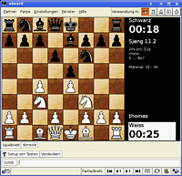 |
| eboard |
eboard¶
eboard ist der Spitzenreiter in der Kategorie der Schachoberflächen, lediglich kleine Mängel in der Bedienerfreundlichkeit sind zu erwähnen.
Als kleines "Bonbon" bietet eboard die Möglichkeit, sich mit einem anderen eboard-Benutzer per Internet direkt zu verbinden.
Installation¶
Es genügt, das Paket
eboard (universe)
 mit apturl
mit apturl
Paketliste zum Kopieren:
sudo apt-get install eboard
sudo aptitude install eboard
zu installieren [1].
Das Programm kann durch den Befehl eboard gestartet werden [3].
Konfiguration¶
Der Menüpunkt Einstellungen sowie die Unterpunkte sind weitgehend leicht verständlich. Lediglich die Tatsache, dass eine Partie mit "Partner -> Spiel gegen Engine" gestartet werden muss, ist etwas gewöhnungsbedürftig. Die Funktion zur Partiespeicherung versteckt sich unter "Fenster -> Partien auf dem Client".
Engines, die das Programm nicht automatisch erkennt, heißen "Generische Engine". Hat man eine solche Fremd-Engine einmal eingebunden, kann man ein "Lesezeichen" für sie setzen, welches dann im Menü "Partner -> Engine-Lesezeichen" aufgeführt wird. Zu beachten ist, dass GNU Chess 5 als Fremd-Engine gesehen wird, während GNU Chess 4 automatisch erkannt wird.
Zusätzliche Themes sind im Paket
eboard-extras-pack1 (universe)
mit apturl
Paketliste zum Kopieren:
sudo apt-get install eboard-extras-pack1
sudo aptitude install eboard-extras-pack1
enthalten. Nach der Installation [1] werden sie beim nächsten Start von eboard unter "Einstellungen -> Figurensets (Bitmaps)" aufgeführt.
| 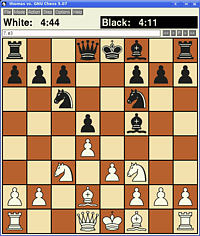 |
| Xboard |
Xboard¶
Xboard ist eines der ältesten Schachbrett-Programme für Linux. Die Bedienung ist etwas gewöhnungsbedürftig, und die Optik der Menüs wirkt antiquiert. Diese Nachteile macht Xboard aber durch die gute Funktionalität wett. Insbesondere die Möglichkeit der freien Stellungseingabe ist hierbei erwähnenswert.
Installation¶
Installiert [1] wird Xboard über das Paket
xboard (universe)
mit apturl
Paketliste zum Kopieren:
sudo apt-get install xboard
sudo aptitude install xboard
Xboard kann durch den Befehl xboard gestartet werden [3].
Konfiguration¶
Die Wahl verschiedener Engines und vieles weitere geschieht über Kommandozeilenparameter bzw. über die Datei ~/.Xdefaults. Aufgrund der zahlreichen Konfigurationsmöglichkeiten ist es an dieser Stelle nicht möglich, alles aufzulisten. Hilfe erhält man durch die Eingabe von man xboard im Terminal [2].
Die Einbindung der Engines geschieht über den Parameter -fcp ("first chess program"), zum Beispiel
xboard -fcp hoichess
Will man zwei Engines gegeneinander antreten lassen, so muss man die zweite Engine mit dem Parameter -scp ("second chess program") angeben, beispielsweise
xboard -fcp sjeng -scp crafty
Die Farben der Felder und Figuren sind individuell konfigurierbar. Beispiel:
xboard -size medium -lightSquareColor \#dddd88 -darkSquareColor \#cc3300 -whitePieceColor \#ffffcc -blackPieceColor \#330000
Etwas bessere Hilfe zur Konfiguration gibt es bei Vico's little Linux site . Eine Auswahl an alternativen Figurensätzen, die unter der LGPL (GNU Lesser General Public License) stehen, bietet die MaurizioHomepage .
| 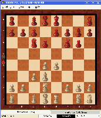 |
| Knights |
Knights¶
Das KDE-Programm Knights ist sehr benutzerfreundlich und bietet viele Anpassungsmöglichkeiten. Einzig die Möglichkeit zur Stellungseingabe fehlt.
Installation¶
Die Installation [1] geschieht einfach über das Paket
knights (universe)
mit apturl
Paketliste zum Kopieren:
sudo apt-get install knights
sudo aptitude install knights
Konfiguration¶
Die Konfiguration geschieht durch den Aufruf des Menüpunkts "Einstellungen -> Knights konfigurieren". Die Einstellmöglichkeiten sind weitgehend selbsterklärend.
Neue Figurensätze und Brettoberflächen sind im Knights Theme Pack enthalten. Dieses muss auf der Festplatte gespeichert und dann ins Verzeichnis ~/.knights entpackt werden. Beim nächsten Start von Knights stehen die neuen Themes zur Auswahl.
Im Screenshot sieht man das Brett "FritzLook" mit dem Figurensatz "Staunton".
| 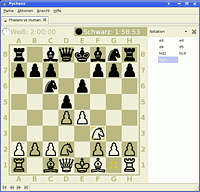 |
| PyChess |
PyChess¶
PyChess besticht durch seine ausgewogene Mischung aus Einfachheit und Funktionalität. Online-Spiele sind über FICS möglich und für das Spiel gegen den Computer sind alle wichtigen Funktionen vorhanden. Eine Besonderheit: der "Spionage-Modus", der dem Spieler anzeigt, welchen Zug die Engine als nächstes plant.
Neben den externen Engines (CECP und UCI) kann man bei PyChess auch eine mitgelieferte Engine auswählen und kann so zwischen sehr leichten bis wirklich schweren Computer-Gegnern wählen. Spielstände können in den Formaten PGN, EPD oder FEN gespeichert werden.
Installation¶
Benötigt wird das folgende Paket:
pychess (universe)
mit apturl
Paketliste zum Kopieren:
sudo apt-get install pychess
sudo aptitude install pychess
Konfiguration¶
Eine gut durchdachte Benutzeroberfläche bietet schnellen intuitiven Zugriff auf alle Funktionen. Verzichten muss man leider auf die Möglichkeit, die Markierung der zuletzt gezogenen Figur abzuschalten.
| 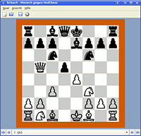 |
| glChess |
glChess¶
glChess (auch GNOME Chess) ist das schlankeste Programm in der Liste. Insbesondere die in älteren Versionen fehlende Schachuhr machte es für fortgeschrittene Spieler früher unbrauchbar. Als kleines Extra besitzt glChess die Möglichkeit, das Brett dreidimensional darzustellen. Allerdings lässt sich das dreidimensionale Brett nicht drehen.
Installation¶
Als Teil der Spielesammlung GNOME Games war glChess bei älteren Ubuntu-Versionen bereits vorinstalliert. Es heißt schlicht "Schach". Kubuntu-/Xubuntu-Benutzer können dieses Paket nachträglich installieren. In der Paketverwaltung [1] wählt man das Paket:
gnome-chess (universe)
mit apturl
Paketliste zum Kopieren:
sudo apt-get install gnome-chess
sudo aptitude install gnome-chess
Bis Ubuntu 12.10 lautete der Paketname:
glchess (universe)
mit apturl
Paketliste zum Kopieren:
sudo apt-get install glchess
sudo aptitude install glchess
Nach der Installation ist das Programm bei Ubuntu-Varianten mit einem Anwendungsmenü unter "Spiele -> Schach" zu finden.
Konfiguration¶
Die wenigen Einstellungsmöglichkeiten sind im Menü zu finden. Leider kann man die Markierung der möglichen Zielfelder der angewählten Figur nicht deaktivieren.
| 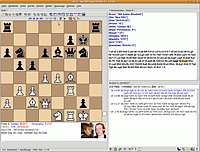 |
| Scid |
Schachdatenbanken¶
In Schachdatenbanken werden Partien mit Informationen zu Spielern Zug für Zug festgehalten, beispielsweise um Spiele zu analysieren, die eigene Entwicklung festzuhalten oder einfach nur, um eine Partie nach einer Unterbrechung fortsetzten zu können.
Schachdatenbanken können beispielsweise mit der integrierten Funktion von José verwaltet und kommentiert werden, es steht mit Scid aber auch ein eigenständiges Programm zur Verfügung. Die meisten Schachprogramme unterstützen das PGN-Datenbankformat, um Spielpartien zu speichern.
Scid¶
Mit Scid verwaltet man Schachdatenbanken, kann Suchen nach verschiedensten Kriterien durchführen, graphische Elo-Trends ablesen sowie druckfertige Berichte über Spieler sowie Eröffnungen erstellen. Desweiteren kann man über FICS online Schach spielen sowie Schachengines entweder zu Analysezwecken oder als Spielpartner einbinden.
Scid verwendet eine eigene Datenbanktechnik, beherrscht aber auch den Ex- und Import im "portable game notation"-Format (pgn), womit Scid mit jedem anderen Schachprogramm kompatibel wird. Es sei an dieser Stelle der Hinweis erlaubt, das Scid sich eher an den professionellen Benutzer richtet, wobei jeder selbst entscheiden soll, ob das für ihn zutrifft.
Weitere Informationen zu dem Programm findet man im Artikel Scid.
| 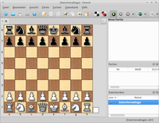 |
| ChessX |
ChessX¶
ChessX ist ein relativ junges Programm. Wem Scid zu altbacken aussieht und wer keinen großen Wert auf große Datenbanken legt, der sollte ChessX ausprobieren. Leider können bis jetzt nur .pgn-Datenbanken angesprochen werden, dafür können bereits dieselben Engines wie unter Scid eingebunden werden. Ab Ubuntu 14.04 ist es in den offiziellen Paketquellen enthalten und kann über folgendes Paket installiert werden:
chessx (universe)
mit apturl
Paketliste zum Kopieren:
sudo apt-get install chessx
sudo aptitude install chessx
| 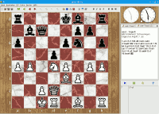 | 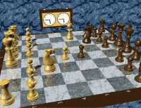 |
| José mit Schachuhr | José in 3D-Ansicht |
José¶
José ist eine Java-basierende Schachoberfläche, die mit der Toga II-Engine bestückt sowohl im Paket mit Java als auch ohne selbiges von der Projektseite bezogen werden kann. José beherscht die Varianten "Fischer Random Chess", "Chess 960" und "Shuffle Chess".
José bietet neben einer Stechuhr und der Möglichkeit bei entsprechender OpenGL-Unterstützung eine dreidimensionale Ansicht zu nutzen, alle Einstellungsmöglichkeiten einer modernen Schachoberfläche in deutscher Sprache, sowie eine MySQL-gestützte Schachdatenbank. In der Datenbank sind zu Anfang sechzehn Partien des dritten Schachweltmeisters José Raúl Capablanca y Graupera enthalten, nach dem das Spiel benannt ist.
Mit dem Web-Servlet ist eine Darstellung der Datenbank, zu der José einen grafischen Zugang mit Kommentierungsfunktion bietet, auch auf einem Webserver möglich.
Die Engine kann über die Einstellungen ebenso leicht ausgetauscht werden, wie Eröffnungsbibliotheken, Design-Elemente und Soundausgaben. Engines, die das XBoard- oder das "Universal Chess Interface"-Protokoll unterstützen können gewählt werden.
Das als Java-Programm plattformunabhängige José steht unter der GNU General Public License Version 2, wobei es mit kommerziellen Programme dank der Toga II-Engine in der Elo-Zahl nicht nur mithalten kann, sondern viele schlägt.
Das Programm wird anscheinend nicht mehr weiter entwickelt. Die aktuelle Version 1.44 stammt aus dem Jahr 2006.
Eigenständige Programme¶
Einige Programme bringen ihre eigenen Engines mit oder haben eine bestimmte Engine integriert, die nicht getauscht werden kann.
| 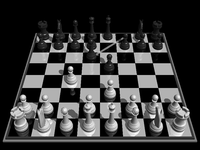 |
| Brutalchess |
Brutalchess¶
Folgendes Paket muss installiert werden [1]:
brutalchess (universe)
mit apturl
Paketliste zum Kopieren:
sudo apt-get install brutalchess
sudo aptitude install brutalchess
Brutalchess ist ein einfaches Schachspiel mit dreidimensionaler Ansicht und animierten Spielzügen. Leider befindet sich Brutalchess noch in einem Alphastadium und ist wenig konfigurierbar und nicht besonders spielstark.
Die Züge werden mit der linken Maustaste getätigt, die Ansicht kann mit der rechten Maustaste rotiert werden. Das Menü, in dem Spiel- und Grafikoptionen eingestellt und ein neues Spiel begonnen werden können, wird mit Esc aufgerufen und ebenso wieder verlassen.
| 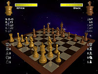 |
| Dreamchess |
Dreamchess¶
Dreamchess ist ein einfaches Schachspiel mit dreidimensionaler Oberfläche und animierten Spielzügen. Es bringt die eigene Engine Dreamer mit, kann aber auch andere Engines benutzen. Folgendes Paket muss installiert werden [1]:
dreamchess (universe)
mit apturl
Paketliste zum Kopieren:
sudo apt-get install dreamchess
sudo aptitude install dreamchess
| 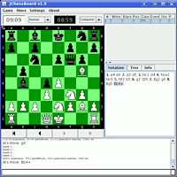 |
| jChessboard |
jChessBoard¶
Ein weiteres Programm mit eigener Engine ist jChessBoard . Hierbei handelt es sich um ein Java-Programm, dem es leider auch an Optionen fehlt. Insbesondere das Brett selbst ist nicht anpassbar.
Allerdings bietet jChessBoard ähnlich wie eboard die Möglichkeit der Direktverbindung.
Links¶
Deutscher Schachbund e.V.
– Einer der größten Schachverbände der Welt. Pro-Linux
- Schach unter Linux: Schachbretter (2004) http://de.wikibooks.org/wiki/Schach
– Wikibooks: Schachbuch – Lern- und Lehrmaterialien Chess Games Links
– Schach Linksammlung zu Programmen und Datenbanken freeChess.org
– Freier Internet Schach ServerCCRL 40/40 Rating List
– Vergleich der Schach-Engines The Week in Chess
- Schachmagazin mit freien Datenbankenpgn-Mentor
- Freie Meisterpartien geordnet nach Spieler, Eröffnung, TurnierTop 5000
Downloadseite einer großen freien pgn-Datenbank (Million Base)
- Erstellt mit Inyoka
-
 2004 – 2017 ubuntuusers.de • Einige Rechte vorbehalten
2004 – 2017 ubuntuusers.de • Einige Rechte vorbehalten
Lizenz • Kontakt • Datenschutz • Impressum • Serverstatus -
Serverhousing gespendet von